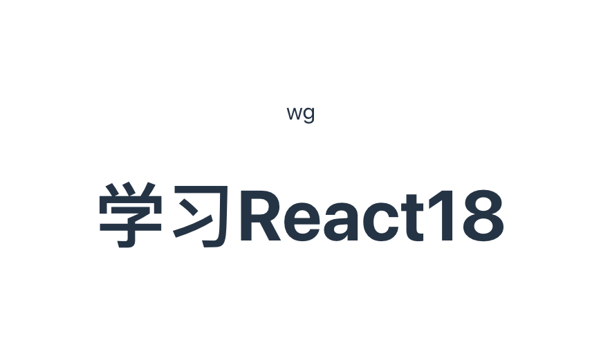

环境
editorconfig
在项目根路径下创建.editorconfig
# https://editorconfig.org
root = true
[*]
charset = utf-8
indent_style = space
indent_size = 2
end_of_line = lf
insert_final_newline = true
trim_trailing_whitespace = true
prettier
// 安装prettier
yarn add prettier -D
//在根路径下创建.prettierrc.cjs
module.exports = {
printWidth: 120, //每行最大列，超过会换行
tabWidth: 2, //缩进
semi: false, //
}
React基础
React jsx语法讲解
变量声明
import './App.css'
function App() {
const name = <div>wg</div>
const info = <h1>学习React18</h1>
return (
<>
{name}
{info}
</>
)
}
export default App

条件判断
import './App.css'
function App() {
const admin = <span>管理员</span>
const member = <span>会员</span>
const isAdmin = false
return (
<>
{isAdmin ? admin: member} {/*输出： 会员 */}
</>
)
}
export default App
样式
import './App.css'
function App() {
const admin = <span style={{color:'red',fontSize: 16}}>管理员</span> {/* style */}
const member = <span>会员</span>
const isAdmin = true
return (
<>
{isAdmin ? admin: member}
</>
)
}
export default App
循环
使用 map 方法
import React from 'react';
const numbers = [1, 2, 3, 4, 5];
const App = () => {
return (
<ul>
{numbers.map((number) => (
<li key={number}>{number}</li>
))}
</ul>
);
};
export default App;
使用 for 循环
import React from 'react';
const numbers = [1, 2, 3, 4, 5];
const App = () => {
const listItems = [];
for (let i = 0; i < numbers.length; i++) {
listItems.push(<li key={numbers[i]}>{numbers[i]}</li>);
}
return <ul>{listItems}</ul>;
};
export default App;
循环对象属性
import React from 'react';
const person = {
name: 'John',
age: 30,
occupation: 'Developer'
};
const App = () => {
return (
<ul>
{/* 在这个例子中，我们使用 Object.entries 方法将对象的键值对转换为数组，然后使用 map 方法遍历该数组并渲染每个键值对。*/}
{Object.entries(person).map(([key, value]) => (
<li key={key}>{`${key}: ${value}`}</li>
))}
</ul>
);
};
export default App;
表单事件
文本输入框（input）事件
对于文本输入框，通常会用到
onChange事件来实时捕获输入内容的变化，用onSubmit事件来处理表单提交。
import React, { useState } from 'react';
const TextInputForm = () => {
const [inputValue, setInputValue] = useState('');
const handleChange = (e) => {
setInputValue(e.target.value);
};
const handleSubmit = (e) => {
e.preventDefault();
console.log('提交的内容:', inputValue);
};
return (
<form onSubmit={handleSubmit}>
<input
type="text"
value={inputValue}
onChange={handleChange}
placeholder="请输入内容"
/>
<button type="submit">提交</button>
</form>
);
};
export default TextInputForm;
在上述代码中，
useState用于创建一个状态变量inputValue来存储输入框的值。handleChange函数会在输入内容变化时更新该状态。handleSubmit函数则在表单提交时被调用，使用e.preventDefault()来阻止表单的默认提交行为。
复选框（input[type="checkbox"]）事件
复选框通常使用
onChange事件来处理选中状态的变化。
import React, { useState } from 'react';
const CheckboxForm = () => {
const [isChecked, setIsChecked] = useState(false);
const handleCheckboxChange = (e) => {
setIsChecked(e.target.checked);
};
return (
<form>
<input
type="checkbox"
checked={isChecked}
onChange={handleCheckboxChange}
/>
<label>是否选中</label>
</form>
);
};
export default CheckboxForm;
这里，
isChecked状态变量用来存储复选框的选中状态，handleCheckboxChange函数会在复选框状态改变时更新该状态。
下拉框（select）事件
下拉框同样使用
onChange事件来处理选项的选择变化。
import React, { useState } from 'react';
const SelectForm = () => {
const [selectedOption, setSelectedOption] = useState('option1');
const handleSelectChange = (e) => {
setSelectedOption(e.target.value);
};
return (
<form>
<select value={selectedOption} onChange={handleSelectChange}>
<option value="option1">选项 1</option>
<option value="option2">选项 2</option>
<option value="option3">选项 3</option>
</select>
</form>
);
};
export default SelectForm;
此例中，
selectedOption状态变量存储当前选中的选项值，handleSelectChange函数会在选项改变时更新该状态。
多行文本框（textarea）事件
多行文本框和输入框类似，使用
onChange事件处理内容变化。
import React, { useState } from 'react';
const TextareaForm = () => {
const [textareaValue, setTextareaValue] = useState('');
const handleTextareaChange = (e) => {
setTextareaValue(e.target.value);
};
return (
<form>
<textarea
value={textareaValue}
onChange={handleTextareaChange}
placeholder="请输入多行文本"
/>
</form>
);
};
export default TextareaForm;
这里，
textareaValue状态变量存储多行文本框的内容，handleTextareaChange函数会在内容改变时更新该状态。
属性传递
基本属性传递
基本属性传递是最常见的方式，你可以将数据作为属性传递给子组件，子组件通过
props对象来接收这些数据。
import React from 'react';
// 子组件
const ChildComponent = (props) => {
return (
<div>
<p>接收到的名称: {props.name}</p>
<p>接收到的年龄: {props.age}</p>
</div>
);
};
// 父组件
const ParentComponent = () => {
const name = 'John';
const age = 30;
return (
<div>
<h1>父组件</h1>
<ChildComponent name={name} age={age} />
</div>
);
};
export default ParentComponent;
在上述代码中，
ParentComponent作为父组件，将name和age作为属性传递给ChildComponent。ChildComponent通过props对象接收这些属性并进行渲染。
展开运算符传递属性
如果你有一个包含多个属性的对象，你可以使用展开运算符
...来一次性传递所有属性
import React from 'react';
// 子组件
const ChildComponent = (props) => {
return (
<div>
<p>接收到的名称: {props.name}</p>
<p>接收到的年龄: {props.age}</p>
</div>
);
};
// 父组件
const ParentComponent = () => {
const person = {
name: 'John',
age: 30
};
return (
<div>
<h1>父组件</h1>
<ChildComponent {...person} />
</div>
);
};
export default ParentComponent;
在这个例子中，
person对象包含name和age属性，使用展开运算符...将其所有属性传递给ChildComponent。
函数作为属性传递
你可以将函数作为属性传递给子组件，子组件可以调用这个函数来与父组件进行通信。
import React, { useState } from 'react';
// 子组件
const ChildComponent = (props) => {
const handleClick = () => {
props.onClick('Hello from child!');
};
return (
<button onClick={handleClick}>点击调用父组件函数</button>
);
};
// 父组件
const ParentComponent = () => {
const [message, setMessage] = useState('');
const handleChildClick = (msg) => {
setMessage(msg);
};
return (
<div>
<h1>父组件</h1>
<p>接收到的消息: {message}</p>
<ChildComponent onClick={handleChildClick} />
</div>
);
};
export default ParentComponent;
在这个示例中，
ParentComponent将handleChildClick函数作为onClick属性传递给ChildComponent。ChildComponent中的按钮点击事件调用props.onClick函数，并传递一个消息给父组件。
上下文（Context）传递属性
当你需要在多个层级的组件之间共享数据时，使用上下文（Context）是一个不错的选择。
import React, { createContext, useContext, useState } from 'react';
// 创建上下文
const UserContext = createContext();
// 子组件
const ChildComponent = () => {
const user = useContext(UserContext);
return (
<div>
<p>接收到的用户名称: {user.name}</p>
<p>接收到的用户年龄: {user.age}</p>
</div>
);
};
// 父组件
const ParentComponent = () => {
const [user, setUser] = useState({
name: 'John',
age: 30
});
return (
<UserContext.Provider value={user}>
<div>
<h1>父组件</h1>
<ChildComponent />
</div>
</UserContext.Provider>
);
};
export default ParentComponent;
在这个例子中，使用
createContext创建了一个UserContext，ParentComponent使用UserContext.Provider提供数据，ChildComponent使用useContext钩子获取上下文数据。
useState
基本概念
在 React 中，状态是一种能在组件渲染过程中保存和更新数据的机制。在类组件里，状态通常通过 this.state 和 this.setState 来管理；而在函数组件中，就可以使用 useState 这个 Hook 来实现相同的功能。
语法
useState 函数接收一个初始状态值作为参数，并返回一个包含两个元素的数组：
const [state, setState] = useState(initialState);
state：当前状态的值。setState：用于更新状态的函数。initialState：状态的初始值，可以是任意数据类型，如数字、字符串、对象、数组等。
基本使用示例
以下是一个简单的计数器示例，展示了 useState 的基本用法：
import React, { useState } from 'react';
const Counter = () => {
// 初始化状态，count 的初始值为 0
const [count, setCount] = useState(0);
const increment = () => {
// 更新状态
setCount(count + 1);
};
const decrement = () => {
setCount(count - 1);
};
return (
<div>
<p>计数: {count}</p>
<button onClick={increment}>增加</button>
<button onClick={decrement}>减少</button>
</div>
);
};
export default Counter;
在这个示例中，useState(0) 将 count 状态的初始值设为 0。setCount 函数用于更新 count 的值。每次点击 “增加” 或 “减少” 按钮时，相应的函数会被调用，从而更新 count 的值。
初始状态的延迟计算
如果初始状态是通过复杂计算得到的，你可以传入一个函数作为 useState 的参数。这个函数只会在组件的初始渲染时执行。
import React, { useState } from 'react';
const getInitialValue = () => {
// 模拟复杂计算
return Math.random() * 100;
};
const ComplexCounter = () => {
const [value, setValue] = useState(getInitialValue);
return (
<div>
<p>初始值: {value}</p>
</div>
);
};
export default ComplexCounter;
在这个例子中，getInitialValue 函数只会在组件首次渲染时执行，用于计算初始状态的值。
函数式更新
当新的状态值依赖于之前的状态时，你可以向 setState 函数传入一个回调函数。这个回调函数接收前一个状态值作为参数，并返回新的状态值。
import React, { useState } from 'react';
const DoubleCounter = () => {
const [count, setCount] = useState(0);
const doubleIncrement = () => {
// 函数式更新
setCount(prevCount => prevCount + 2);
};
return (
<div>
<p>计数: {count}</p>
<button onClick={doubleIncrement}>增加 2</button>
</div>
);
};
export default DoubleCounter;
在这个例子中，setCount 接收一个回调函数，该函数使用前一个状态值 prevCount 来计算新的状态值。这种方式在处理多个状态更新时非常有用，因为它可以确保每次更新都基于最新的状态。
多个状态变量
你可以在一个组件中使用多个 useState 调用，以管理不同的状态
import React, { useState } from 'react';
const MultipleStates = () => {
const [name, setName] = useState('');
const [age, setAge] = useState(0);
const handleNameChange = (e) => {
setName(e.target.value);
};
const handleAgeChange = (e) => {
setAge(Number(e.target.value));
};
return (
<div>
<input
type="text"
value={name}
onChange={handleNameChange}
placeholder="输入姓名"
/>
<input
type="number"
value={age}
onChange={handleAgeChange}
placeholder="输入年龄"
/>
<p>姓名: {name}, 年龄: {age}</p>
</div>
);
};
export default MultipleStates;
在这个例子中，name 和 age 是两个独立的状态变量，分别使用不同的 useState 调用进行管理。
注意事项
- 状态更新是异步的：
setState函数是异步的，多次调用setState可能会被合并。如果需要在状态更新后执行某些操作，可以使用useEffectHook。 - 状态的不可变性：在更新状态时，应该避免直接修改状态对象，而是创建一个新的对象。例如，如果状态是一个数组或对象，应该使用展开运算符或其他方法创建一个新的副本进行更新。
useEffect
useEffect 是 React 18 里一个十分关键的 Hook，它能让你在函数组件里执行副作用操作。副作用操作涵盖数据获取、订阅、手动修改 DOM 等。下面会详细解析 useEffect 的语法与使用场景。
基本语法
useEffect 函数接收两个参数：
useEffect(effect, dependencies);
effect：这是一个函数，其中包含了需要执行的副作用操作。此函数还可以返回一个清理函数，用于在组件卸载或者依赖项变更时执行清理工作。dependencies：这是一个可选的数组，包含了影响副作用执行的依赖项。当这些依赖项中的任意一个发生变化时，副作用函数就会重新执行。要是省略这个参数，副作用函数会在每次组件渲染之后都执行；若传入一个空数组，副作用函数仅会在组件挂载和卸载时执行。
常见使用场景
1. 组件挂载和卸载时执行副作用
当传入一个空数组作为依赖项时，useEffect 里的副作用函数只会在组件挂载时执行一次，而返回的清理函数会在组件卸载时执行。
import React, { useEffect } from 'react';
const MountAndUnmountEffect = () => {
useEffect(() => {
// 组件挂载时执行的操作
console.log('组件已挂载');
// 返回清理函数
return () => {
console.log('组件将卸载');
};
}, []);
return <div>组件示例</div>;
};
export default MountAndUnmountEffect;
在这个例子中，useEffect 的依赖项为空数组，所以副作用函数仅在组件挂载时执行，清理函数在组件卸载时执行。
2. 依赖项变化时执行副作用
当传入一个包含依赖项的数组时，副作用函数会在组件挂载时执行，并且在依赖项中的任意一个发生变化时重新执行。
import React, { useState, useEffect } from 'react';
const DependencyChangeEffect = () => {
const [count, setCount] = useState(0);
useEffect(() => {
// 依赖项变化时执行的操作
console.log(`计数已更新为: ${count}`);
}, [count]);
const increment = () => {
setCount(count + 1);
};
return (
<div>
<p>计数: {count}</p>
<button onClick={increment}>增加</button>
</div>
);
};
export default DependencyChangeEffect;
在这个例子中，useEffect 的依赖项是 [count]，所以每当 count 的值发生变化时，副作用函数就会重新执行。
3. 每次组件渲染时执行副作用
若省略依赖项参数，副作用函数会在每次组件渲染之后都执行。
import React, { useState, useEffect } from 'react';
const EveryRenderEffect = () => {
const [value, setValue] = useState('');
useEffect(() => {
// 每次组件渲染时执行的操作
console.log('组件已渲染');
});
const handleChange = (e) => {
setValue(e.target.value);
};
return (
<div>
<input
type="text"
value={value}
onChange={handleChange}
placeholder="输入内容"
/>
</div>
);
};
export default EveryRenderEffect;
在这个例子中，由于没有传入依赖项，副作用函数会在每次组件渲染之后执行。
清理函数
副作用函数可以返回一个清理函数，用于在组件卸载或者依赖项变更时执行清理工作。清理函数常用于取消订阅、清除定时器等操作。
import React, { useEffect } from 'react';
const CleanupEffect = () => {
useEffect(() => {
const timer = setInterval(() => {
console.log('定时器正在运行');
}, 1000);
// 返回清理函数
return () => {
clearInterval(timer);
console.log('定时器已清除');
};
}, []);
return <div>定时器组件</div>;
};
export default CleanupEffect;
在这个例子中，副作用函数创建了一个定时器，清理函数在组件卸载时清除了这个定时器，避免了内存泄漏。
注意事项
- 依赖项数组的准确性：要确保依赖项数组中包含了所有会影响副作用执行的变量。若遗漏了某些依赖项，副作用可能不会在需要的时候重新执行；若包含了不必要的依赖项，副作用可能会过度执行。
- 清理函数的必要性：如果副作用函数中涉及到需要清理的资源，如定时器、订阅等，一定要返回一个清理函数，以避免内存泄漏。
useMemo和useCallback缓存方案
useMemo
useMemo 是一个重要的 Hook，它主要用于性能优化，通过缓存计算结果，避免在每次渲染时都进行高开销的计算。
基本语法
useMemo 函数接受两个参数，其基本语法如下：
const memoizedValue = useMemo(() => computeValue(), dependencies);
- 第一个参数：是一个函数，该函数返回一个需要被缓存的值，也就是你想要进行计算并缓存的结果。在上述代码中，
computeValue()就是进行具体计算的函数。 - 第二个参数：是一个可选的依赖项数组
dependencies。当数组中的任何一个元素发生变化时，useMemo会重新调用第一个参数中的函数来计算新的结果；如果依赖项数组为空，那么useMemo只会在组件挂载时计算一次结果，后续不会再重新计算；若省略这个参数，useMemo会在每次组件渲染时都重新计算结果。 - 返回值：
useMemo返回的是第一个参数函数计算得到的值的缓存版本，即memoizedValue。
使用场景及示例
1. 缓存昂贵的计算结果
当你有一个计算量较大的函数时，使用 useMemo 可以避免在每次渲染时都进行该计算，只有在依赖项改变时才重新计算。
import React, { useMemo, useState } from 'react';
const ExpensiveCalculation = () => {
const [count, setCount] = useState(0);
// 模拟一个昂贵的计算
const expensiveValue = useMemo(() => {
console.log('进行昂贵的计算');
let sum = 0;
for (let i = 0; i < 1000000; i++) {
sum += i;
}
return sum;
}, []);
const increment = () => {
setCount(count + 1);
};
return (
<div>
<p>计数: {count}</p>
<button onClick={increment}>增加</button>
<p>昂贵计算的结果: {expensiveValue}</p>
</div>
);
};
export default ExpensiveCalculation;
在这个例子中，由于依赖项数组为空，useMemo 中的计算函数只会在组件挂载时执行一次，后续点击按钮增加 count 时，不会重新进行昂贵的计算。
2. 依赖项变化时重新计算
如果依赖项数组中有值发生变化，useMemo 会重新计算结果。
import React, { useMemo, useState } from 'react';
const DependencyChangeCalculation = () => {
const [a, setA] = useState(1);
const [b, setB] = useState(2);
const result = useMemo(() => {
console.log('重新计算结果');
return a + b;
}, [a, b]);
const incrementA = () => {
setA(a + 1);
};
const incrementB = () => {
setB(b + 1);
};
return (
<div>
<p>a 的值: {a}</p>
<button onClick={incrementA}>增加 a</button>
<p>b 的值: {b}</p>
<button onClick={incrementB}>增加 b</button>
<p>计算结果: {result}</p>
</div>
);
};
export default DependencyChangeCalculation;
在这个示例中，当 a 或 b 的值发生变化时，useMemo 会重新调用计算函数来更新 result 的值。
注意事项
useMemo仅用于优化：不要过度使用useMemo，因为它本身也有一定的开销。只有在确实需要避免重复计算时才使用。- 引用相等性：
useMemo缓存的值是基于引用相等性的。如果计算结果是一个对象或数组，即使对象或数组的内容相同，但引用不同，useMemo也会认为是不同的值。 - 避免在
useMemo中执行副作用：useMemo主要用于计算和缓存值，不应该在其中执行副作用操作（如数据获取、订阅等），副作用操作应该使用useEffect。
useCallback
它主要用于性能优化，特别是在处理函数引用时非常有用
基本语法
useCallback 函数接收两个参数，其基本语法如下：
const memoizedCallback = useCallback(
callback,
dependencies
);
- 第一个参数
callback：这是一个需要被记忆（缓存）的函数。当组件重新渲染时，如果依赖项没有发生变化，useCallback会返回之前缓存的函数引用；若依赖项有变化，则会返回一个新的函数引用。 - 第二个参数
dependencies：这是一个可选的依赖项数组。它和useEffect中的依赖项数组类似，数组中的元素是一些变量，当这些变量中的任何一个发生变化时，useCallback会重新创建一个新的函数。如果依赖项数组为空，那么useCallback只会在组件挂载时创建一次函数，后续不会重新创建；若省略这个参数，useCallback会在每次组件渲染时都重新创建函数。 - 返回值
memoizedCallback：useCallback返回的是经过记忆化处理后的函数，也就是缓存的函数引用。
使用场景及示例
1. 避免子组件不必要的重新渲染
当你将一个函数作为属性传递给子组件时，如果这个函数在父组件每次渲染时都重新创建，可能会导致子组件不必要的重新渲染。使用 useCallback 可以缓存这个函数，只有在依赖项变化时才重新创建函数，从而避免子组件的不必要渲染。
import React, { useCallback, useState } from 'react';
// 子组件
const ChildComponent = ({ onClick }) => {
return (
<button onClick={onClick}>点击我</button>
);
};
// 父组件
const ParentComponent = () => {
const [count, setCount] = useState(0);
// 使用 useCallback 缓存函数
const handleClick = useCallback(() => {
setCount(count + 1);
}, [count]);
return (
<div>
<p>计数: {count}</p>
<ChildComponent onClick={handleClick} />
</div>
);
};
export default ParentComponent;
在这个例子中，handleClick 函数使用 useCallback 进行了缓存。只有当 count 发生变化时，handleClick 函数才会重新创建。这样，即使父组件因为其他原因重新渲染，只要 count 不变，传递给 ChildComponent 的 onClick 函数引用就不会改变，从而避免了子组件的不必要重新渲染。
2. 依赖项变化时重新创建函数
如果依赖项数组中有值发生变化，useCallback 会重新创建函数。
import React, { useCallback, useState } from 'react';
const DependencyChangeCallback = () => {
const [a, setA] = useState(1);
const [b, setB] = useState(2);
const calculateSum = useCallback(() => {
return a + b;
}, [a, b]);
const incrementA = () => {
setA(a + 1);
};
const incrementB = () => {
setB(b + 1);
};
return (
<div>
<p>a 的值: {a}</p>
<button onClick={incrementA}>增加 a</button>
<p>b 的值: {b}</p>
<button onClick={incrementB}>增加 b</button>
<p>计算结果: {calculateSum()}</p>
</div>
);
};
export default DependencyChangeCallback;
在这个示例中，当 a 或 b 的值发生变化时，calculateSum 函数会重新创建。因为 calculateSum 函数依赖于 a 和 b 的值，所以当它们变化时需要重新创建函数以保证计算结果的正确性。
注意事项
- 仅在必要时使用：
useCallback本身也有一定的开销，因此不要过度使用。只有在确实需要避免函数的重复创建，以防止子组件不必要的重新渲染时才使用。 - 依赖项的准确性：要确保依赖项数组中包含了所有会影响函数行为的变量。如果遗漏了某些依赖项，可能会导致函数使用到旧的变量值；如果包含了不必要的依赖项，会导致函数不必要地重新创建。
- 与
useMemo的区别：useCallback缓存的是函数引用，而useMemo缓存的是函数的返回值。如果需要缓存一个函数，使用useCallback；如果需要缓存一个计算结果，使用useMemo。